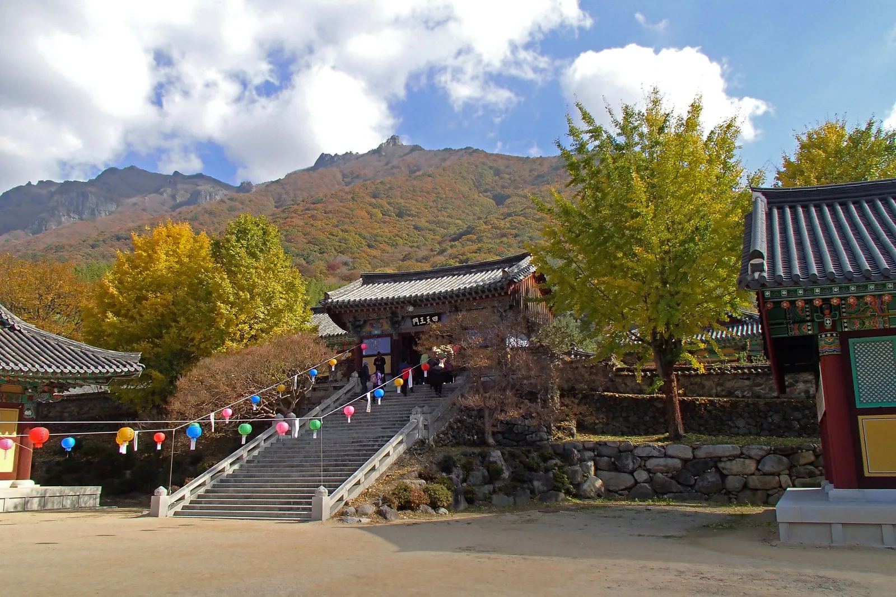
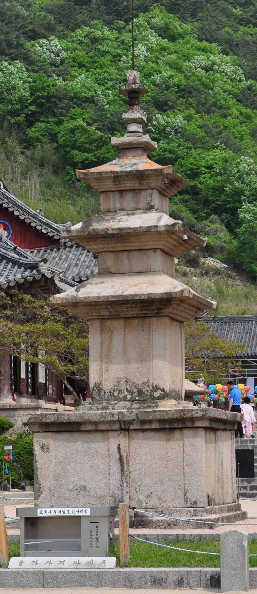
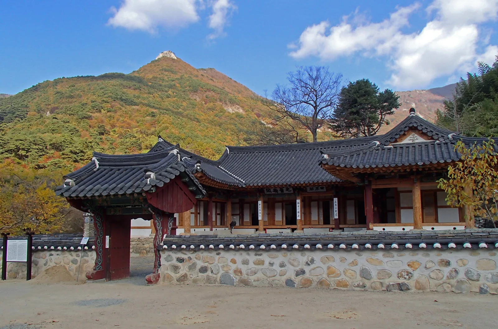
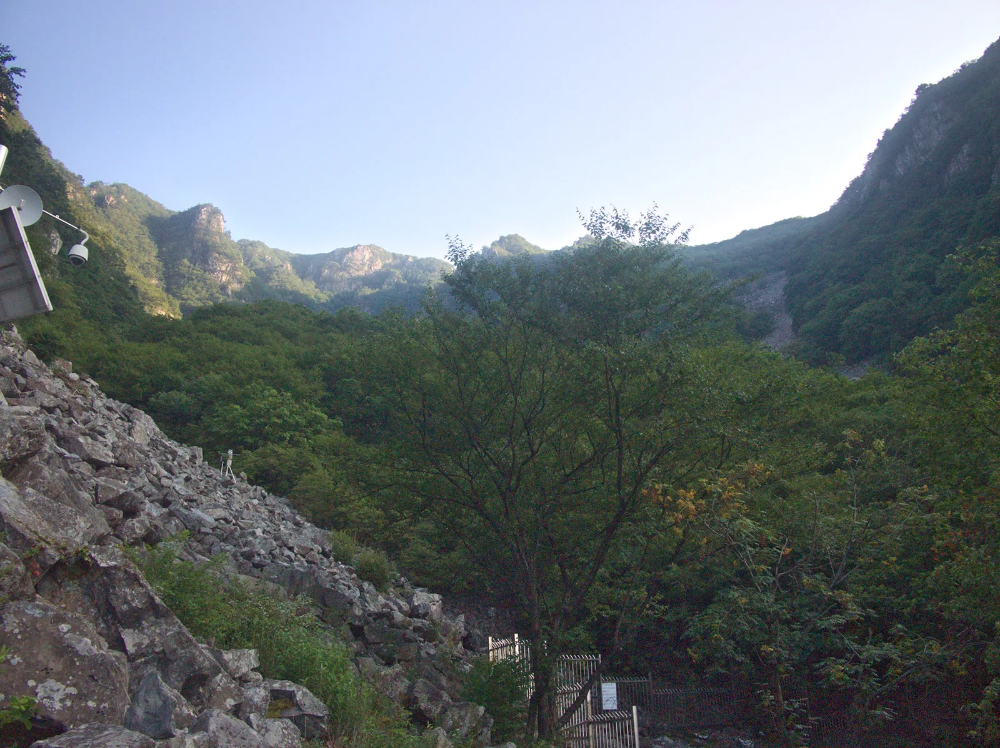
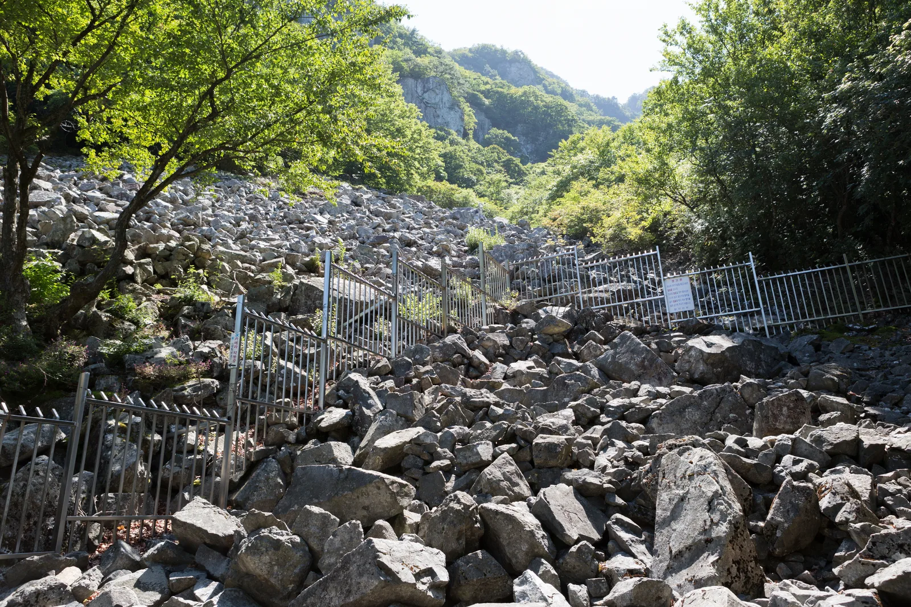

▲ 재약산을 병풍처럼 두르고 앉은 표충사. 사명대사의 충혼을 기리기 위해 국가가 이름 붙인 절이다
경남 밀양시 단장면, 재약산(1189m) 자락에 자리한 표충사는 654년 원효대사가 창건해 '죽림사'라 불렸던 절이다. 임진왜란 때 승병을 이끈 사명대사의 충혼을 기리기 위해 조선 조정이 1839년 사명대사·서산대사·기허대사 세 분의 진영과 유물을 모시면서 지금의 이름 '표충사(表忠寺)'로 불리게 됐다. 불교 사찰이면서 동시에 유생을 교육하던 표충서원도 함께 자리해, 불교와 유교가 한 공간에 공존하는 드문 사례로 꼽힌다. 그리고 표충사에서 차로 20~30분 거리에는 한여름에도 얼음이 언다는 얼음골이 있다. 이 기사는 표충사의 역사와 볼거리부터 얼음골의 냉기 원리, 케이블카 요금까지 하루 코스로 묶는 순서대로 정리했다.
1. 표충사 — 원효대사 창건, 사명대사로 이름을 얻다
▲ 표충사 삼층석탑 너머로 재약산 능선이 보인다. 가을이면 산 전체가 단풍으로 물든다 ⓒ Wikimedia Commons
표충사는 신라 무열왕 원년인 654년, 원효대사가 창건해 죽림사라는 이름으로 시작됐다. 이후 여러 차례 이름이 바뀌다가, 1839년 임진왜란 때 승병을 이끈 사명대사와 스승 서산대사, 기허대사 세 분의 충절을 기리기 위해 조정이 이들의 진영과 유물을 모시면서 '표충사'라는 이름을 받았다. 표충사가 독특한 건 절 안에 표충서원이라는 유교 교육기관이 함께 있다는 점이다. 조선시대 억불정책 속에서도 불교와 유교가 한 공간에서 공존한 드문 사례로, 그만큼 역사적 의미가 남다르다.

▲ 사천왕문으로 오르는 계단. 재약산 봉우리를 배경으로 사천왕문이 자리한다 ⓒ Wikimedia Commons
2. 표충사 볼거리 — 삼층석탑과 전각들

▲ 표충사 삼층석탑. 절 마당 한가운데 자리해 방문객들의 발길이 가장 먼저 닿는 곳이다 ⓒ Wikimedia Commons
절 마당 중심에는 삼층석탑이 자리해 있고, 그 주변으로 대광전을 비롯한 여러 전각이 재약산을 병풍처럼 두르고 늘어서 있다. 표충사는 오랜 역사만큼 국가유산으로 지정된 유물도 여럿 보유하고 있어, 절 자체를 천천히 둘러보는 것만으로도 반나절은 훌쩍 지나간다. 봄에는 경내 벚꽃과 어우러진 전각이, 가을에는 재약산 단풍과 어우러진 지붕선이 각각 다른 표정을 보여준다.

▲ 돌담으로 둘러싸인 표충사 전각. 뒤로 보이는 봉우리가 재약산이다 ⓒ Wikimedia Commons
| 항목 | 내용 |
|---|---|
| 위치 | 경남 밀양시 단장면 표충로 1338 |
| 운영 | 연중무휴 |
| 입장료 | 무료 |
| 주차료 | 4000~9000원 수준(06:00~19:00) |
| 문의 | 055-352-1150 |
3. 얼음골 — 삼복더위에 얼음이 어는 이유

▲ 밀양 남명리 얼음골 입구. 계곡 전체가 바위 너덜지대로 이뤄져 있다 ⓒ Wikimedia Commons
밀양 남명리 얼음골은 천연기념물 제224호로 지정된 특이 지형이다. 이름 그대로 여름에 얼음이 어는 현상으로 유명한데, 보통 3월부터 바위틈에 결빙이 시작되고 날씨가 더워질수록 얼음이 더 많이 생기며, 1년 중 가장 무더운 삼복(三伏) 무렵 얼음이 최대로 언다는 역설적인 현상을 보인다. 바위와 바위 사이 빈틈으로 찬 공기가 지속적으로 빠져나오는 지형적 특성 때문으로 설명되는데, 반대로 겨울에는 바위틈에서 오히려 더운 김이 나온다고 알려져 있다.

▲ 얼음골 너덜지대. 바위틈에서 나오는 찬 공기 때문에 한여름에도 서늘하다 ⓒ Wikimedia Commons
✅ 얼음골 방문 시 참고할 점
· 얼음은 통상 3월부터 얼기 시작해 삼복더위 무렵 가장 많이 언다고 알려져 있음
· 너덜지대 위주 지형이라 걷기 편한 신발 권장
· 정확한 결빙 시기는 그해 기온에 따라 달라지므로 방문 전 확인 권장
4. 영남알프스 얼음골 케이블카 — 요금과 운행시간
얼음골과 함께 찾는 곳이 영남알프스 얼음골 케이블카다. 밀양시의 오랜 숙원사업이었던 이 케이블카는 2012년 9월 21일 개통했으며, 상부 승강장은 해발 1020m로 표고 차만 669m에 이른다. 편도 소요시간은 약 10분, 운행 간격은 20분이다. 상부 승강장에서 내려 약 250m 데크길인 '하늘사랑길'을 따라가면 해발 1100m 지점의 전망대 녹산대에 닿는데, 이곳에서 천황산 일대의 능선을 한눈에 조망할 수 있다.
| 항목 | 내용 |
|---|---|
| 개통 | 2012년 9월 21일 |
| 상부 승강장 해발 | 1020m(표고차 669m) |
| 편도 소요시간 | 약 10분(운행간격 20분) |
| 운행시간 | 3~9월 평일 09:20~17:50, 주말·공휴일 08:30~17:50(10~11월 별도, 12~2월 08:30~16:50) |
| 요금(왕복) | 대인 17,000원·청소년 15,000원·소인 14,000원·지역주민(밀양시) 12,000원 |
2026년 9월 기준 밀양시청 공식 페이지로 재확인한 요금이다. 요금과 운행시간은 계절과 정책에 따라 바뀔 수 있어, 방문 전 공식 홈페이지에서 최신 정보를 확인하는 편이 안전하다.
영남알프스 얼음골 케이블카 공식사이트에서 확인 가능5. 하루 코스로 묶기 — 표충사와 얼음골 이동 동선
표충사와 얼음골은 모두 밀양시 단장면 일대에 있어 차로 20~30분이면 오갈 수 있다. 오전에 표충사를 둘러보며 사찰과 재약산 자락의 고즈넉한 분위기를 즐기고, 오후에 얼음골로 이동해 케이블카로 전망대에 오르는 식으로 하루 일정을 짜는 여행객이 많다. 두 곳 모두 산자락에 자리한 만큼, 걷기 편한 신발과 여벌 옷을 챙기면 좋다.
✅ 밀양 표충사·얼음골, 가기 전 체크리스트
· 표충사는 654년 원효대사 창건, 1839년 사명대사 진영을 모시며 현재 이름으로 개칭
· 표충사 입장료 무료, 주차료 4000~9000원 수준
· 얼음골은 천연기념물 제224호, 삼복더위에 얼음이 가장 많이 어는 특이 현상으로 유명
· 얼음골 케이블카는 2012년 개통, 상부 승강장 해발 1020m·편도 약 10분
· 표충사~얼음골은 차로 20~30분, 하루 코스로 묶기 좋음
· 요금·운행시간은 계절별로 달라지므로 방문 전 공식 홈페이지 확인 권장